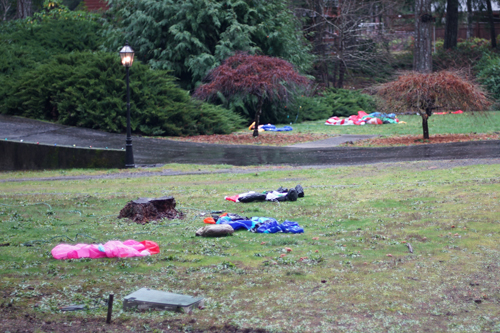
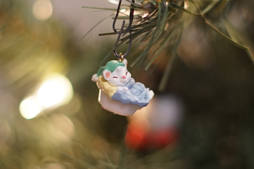

Can you believe I made it to 24 days of silly posts?? Thank you to everyone who did online advent calendars this year! I've enjoyed repeatedly refreshing each of your pages for updates. Are you sad you weren't thanked? Next year, it could be you too!!
This year's media round up:
Books read: a few pages of a few books
Manga read: No.6, Furuba, Black Butler
Games completed: Phoenix Wright: Ace Attorney
Games played, incomplete: LOZ:BOTW2, FF7:Sephiroth's hair game, Pokemon Arceus, Pokemon Violet
Anime watched: K-on, GITS, NGE, Carnival Phantasm, Emiya-san is a lil apron boy, No. 6, IMASCG:U49, Pani Poni Dash, Gosick, Stella, Wake Up Girls, Hanayamata, Yuyushiki
I thought I did a lot more drawing this year and not very much time gaming, but it turns out I used that time to read manga instead. I did draw more at least...
I always loved drawing growing up, but I quit during college. Now that it's becoming clear that my college experience was merely a college experience, I want to improve a lot more in my original passion!! I'm still not sure how to draw a face... Surely I'll figure it out!
I'll end this with one of Ryan's most precious ornaments! He allegedly had a little cup, but I've never seen it to confirm.
Merry Christmas!!!